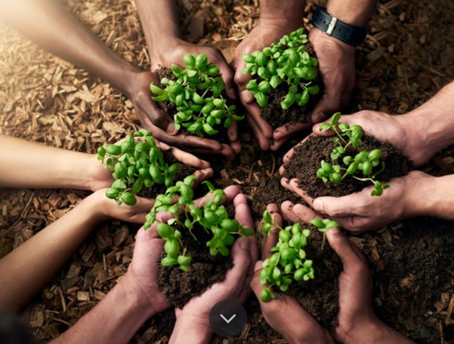
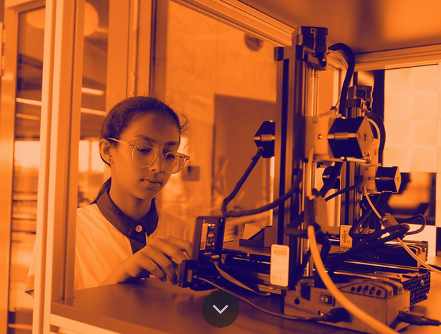
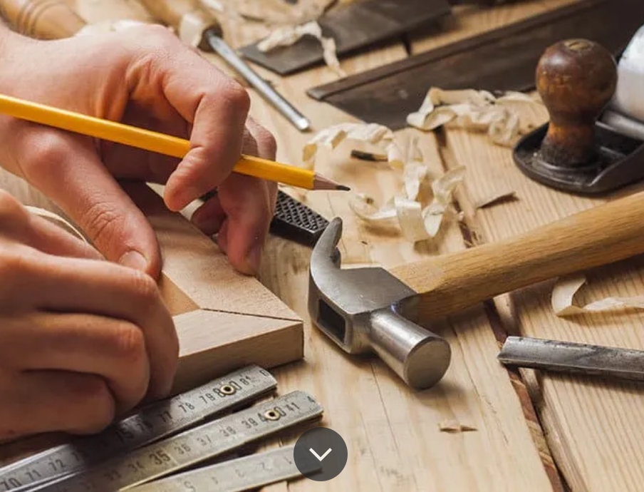
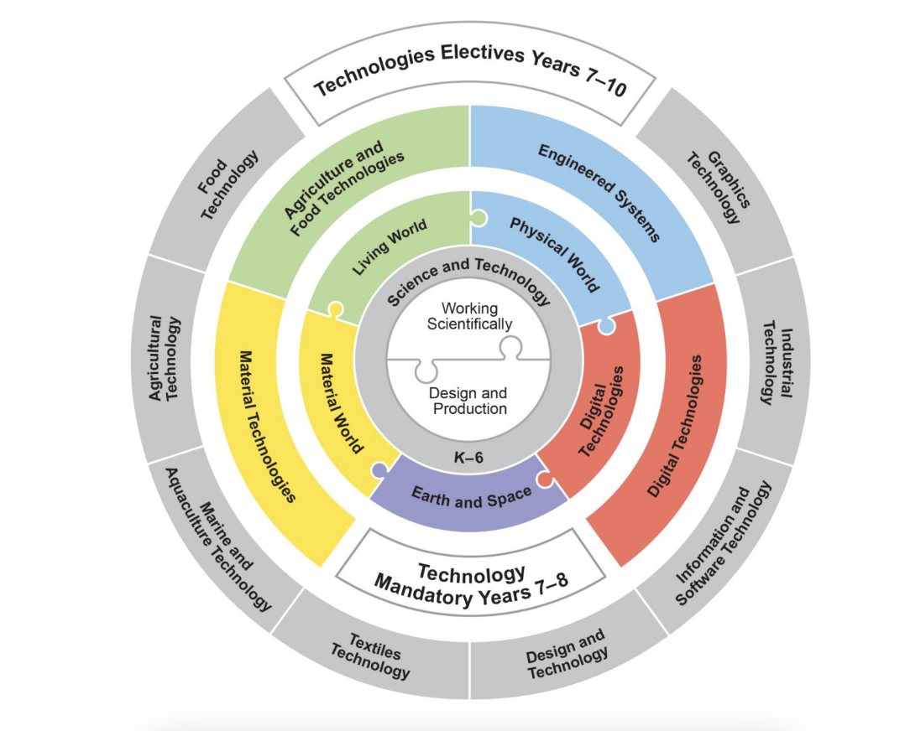

Teaching Portfolio
by Nathaniel Moore-Lambert
Knowledge and Skills
required to teach Technology Mandatory
"The study of Technology Mandatory
in Years 7–8 enables students to become responsible users of technologies and designers of solutions. Through the practical
application of knowledge and understanding, students develop skills in the safe use of a range of technologies to design, produce,
and evaluate solutions to identified needs and opportunities." (NSW Education Standards Authority, 2017)
Shown below are the four major subjects of the Stage 4 Technology Mandatory. The knowledge and skills of each subject
differ and are listed to aid and inform teaching.
Agriculture and Food Technology

Agriculture focuses on the investigation of managed environments, such as farms and plantations.
Food technology focuses on the use of resources produced and harvested to sustain human life. Students learn
about the characteristics and properties of food.
(NSW Education Standards, 2017)
Knowledge of:
- The significance of food and fibre production and exports to Australia's food security and economy
- Agricultural practices such as crop cultivation, animal husbandry, soil management, and pest control
- Sustainable agricultural practices
- How to improve sustainability
- How food and fibre production is managed in various environments
- Plants and/or animal species grown in controlled environments
- Land management by Aboriginal and/or Torres Strait Islander Peoples: boundaries, inputs, outputs, processes, and feedback occurring in a managed environment
- Environments that have been designed in consultation with community groups, such as community gardens or bush tucker gardens
- Characteristics and properties of a variety of nutritious foods
- Nutritional requirements of children of various ages
- Ability to assess design concepts, processes, and solutions, as well as functionality and aesthetics
- Health and safety protocols for handling food and kitchen equipment
- How to incorporate innovation and design thinking to help students develop their creativity, problem-solving, and critical thinking skills
- Cultural and ethical aspects of food choices, dietary practices, and agricultural traditions
- Various assessment strategies in order to assess students' comprehension of the content
Skills of:
- A range of teaching strategies that differentiate instruction to cater to the diverse learning styles, abilities, and needs of students
- Practical knowledge of agricultural practices and food preparation techniques
- The ability to integrate technology and digital tools into the classroom
- The ability to change recipes and practices to better suit the needs of students, such as allergies and cultural considerations
- How to interpret data
- The ability to come up with design and research projects
- Culinary skills such as cooking techniques, food safety, and proper kitchen practices
- Operation of kitchen appliances
- The ability to read, write, and produce using recipes
- Time management skills to ensure projects and recipes can be completed within appropriate class time
Engineered Systems

The Engineered Systems focuses on how force, motion, and energy can be used in systems, machines, and structures.
(NSW Education Standards, 2017)
Knowledge of:
- The way in which technologies evolve locally, regionally, or globally and how competing factors are prioritized in the development of design solutions
- The role of an engineering professional and their impact on the environment and society
- The way Aboriginal and/or Torres Strait Islander Peoples use engineered solutions to serve community needs, including those of cultural identity
- Needs or opportunities for designing an engineered system and investigating and selecting from a range of materials, components, tools, equipment, and processes
- Develop criteria to evaluate design ideas, processes, and solutions for functionality, aesthetics, and a range of constraints, e.g., accessibility, cultural, economic, resource, safety, social, sustainability, and technical
- Basic knowledge of mechanics, forces, materials, and structural principles
- The sources, conversion, and transmission methods of energy
- Impact on sustainability
- Understanding of electronics, circuits, and electrical components
- Basic concepts of automation, control systems, sensors, actuators, and programming logic
- How to use technological tools and software, such as CAD and programming systems
- Safety regulations and ethical considerations
- STEM disciplines and how to integrate them
- Mathematics and physics and how to integrate them
- Prototyping and testing
- Materials science and how to integrate it
Skills:
- The ability to communicate ideas through graphical communication methods such as brainstorming, sketches, technical drawing, CAD, models and prototypes, reports, and statistics
- A range of teaching strategies that differentiate instruction to cater to the diverse learning styles, abilities, and needs of students
- The ability to integrate technology and digital tools into the classroom
- The ability to come up with design and research projects
- The ability to research and select appropriate materials required
- The ability to integrate problem-based learning to apply engineering concepts to real-world problems and create solutions
- Time management skills to ensure projects can be completed within appropriate class time
Material Technology

The Material Technologies context focuses on the application of specialist skills and techniques to a broad range of traditional, contemporary, and advancing materials.
(NSW Education Standards, 2017)
Knowledge of:
- The performance and properties of materials such as electronics, graphics, metals, multimedia, polymers, textiles, and timber
- Products and services for the individual and/or the community, considering ethical and social factors
- A current and innovative product developed by an Aboriginal and/or Torres Strait Islander designer that is influenced by their cultural identity
- The role of professionals in related technology, and their impact on the environment and society
- Develop criteria to evaluate design ideas, processes, and solutions for functionality, aesthetics, and a range of constraints, e.g., accessibility, cultural, economic, resource, safety, social, sustainability, and technical
- Safe use of tools and equipment
- A variety of appropriate material techniques to produce a design solution
- Contemporary and traditional construction techniques relating to specific materials
- The impact of advancing technologies, their impact on industries, as well as ethical and sustainability considerations
- How to improve sustainability
- How to use technological tools and software, such as CAD and programming systems
- Prototyping and testing
- Various assessment strategies in order to assess students' comprehension of the content
- Ability to assess design concepts, processes, and solutions, as well as functionality and aesthetics
Skills:
- The ability to communicate ideas through graphical communication methods such as brainstorming, sketches, technical drawing, CAD, models and prototypes, reports, and statistics
- A range of teaching strategies that differentiate instruction to cater to the diverse learning styles, abilities, and needs of students
- The ability to integrate technology and digital tools into the classroom
- The ability to come up with design and research projects
- The ability to research and select appropriate materials required
- Time management skills to ensure projects can be completed within the appropriate class time
- Ability to properly and safely use a range of appropriate tools and techniques for a variety of materials
- Proper knowledge of tool maintenance
Digital Technologies
The Digital Technologies context encourages students to develop an empowered attitude towards digital technologies, use
abstractions to represent and decompose real-world problems, and implement and evaluate digital solutions. Students are
provided with opportunities to develop fluency in a general-purpose programming language and use these skills to solve
information problems and automate repetitive tasks.
(NSW Education Standards, 2017)
Knowledge of:
- How existing information systems meet needs, are innovative, and take account of future risks and sustainability
- Define and decompose real-world problems, taking into account functional requirements and a range of constraints, e.g., economic, environmental, social, technical, and usability
- Evaluate the suitability of hardware with particular performance characteristics against the needs of different users, e.g., high-powered systems for gaming and computation, energy-efficient systems for travel and productivity, and small and light systems for health monitoring
- Evaluate design ideas, processes, and solutions, their functionality, aesthetics, and a range of constraints, e.g., accessibility, cultural, economic, resource, safety, social, sustainability, and technical
- The user experience of digital technologies and how to improve it
- The forms in which information systems present their data to users, including text, images, and audio
- Past, present, and future direction of digital technologies by analyzing technological trends
- Digital competency and online safety and privacy
- Understanding of computer hardware, components, and their functions
Skills:
- Programming and coding skills in languages relevant to the syllabus, e.g., Scratch, Block, Python, and Java
- Ability to teach complex coding concepts, such as variables, loops, conditionals, and functions
- Ability to identify and fix code errors
- A range of teaching strategies that differentiate instruction to cater to the diverse learning styles, abilities, and needs of students
- The ability to integrate technology and digital tools into the classroom
- The ability to come up with design and research projects
- The ability to research and select appropriate materials required
- The ability to integrate problem-based learning to apply digital concepts to real-world problems and create solutions
- Time management skills to ensure projects can be completed within appropriate class time
The following diagram provides an illustrative representation of elements of the course and their relationship.
